Version 0.0.1 · December 28
First release of the Silk Mizu Browser featuring basic navigation functionality.
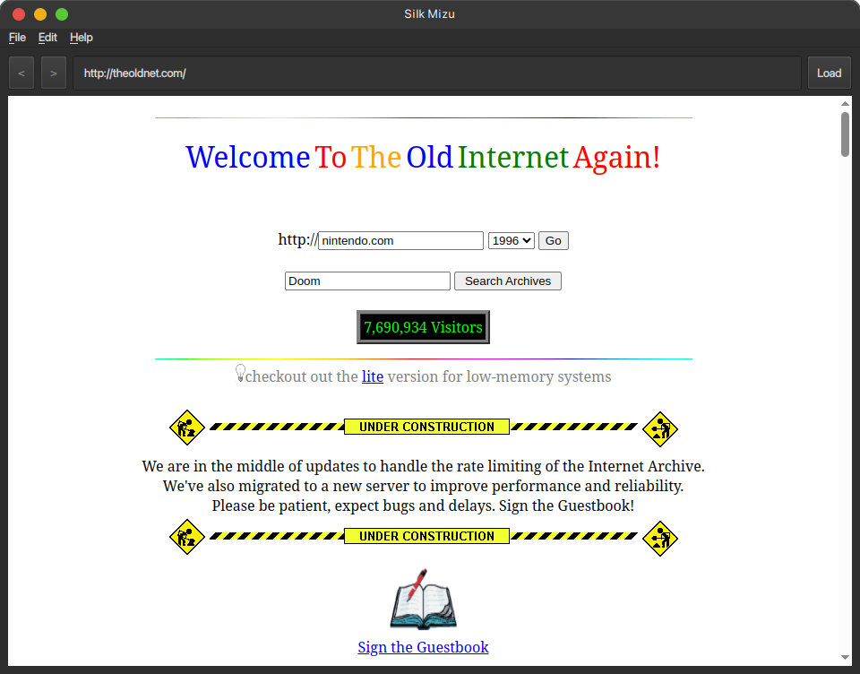
Version 0.0.1 · December 28
Added support for setting a start page and default search engine in the new settings dialog.
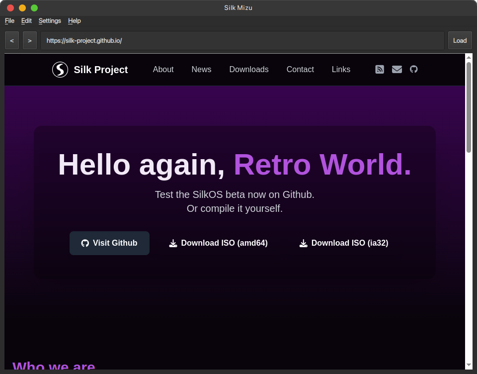
Version 0.0.1 · December 29
Redesigned navigation interface with Font Awesome icons and added new search engine options.
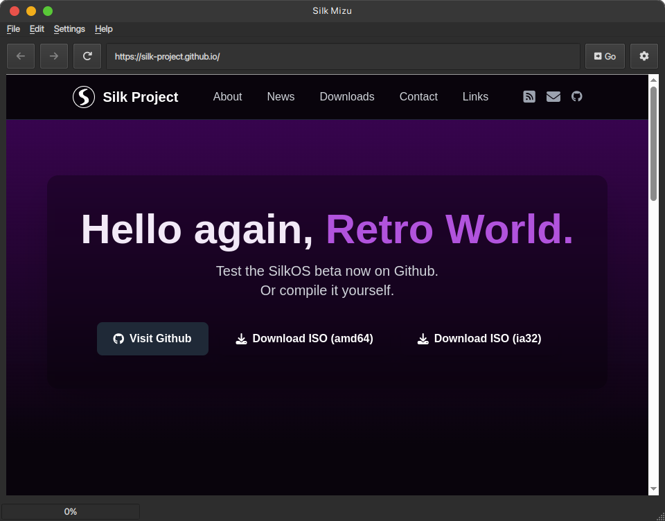
Version 0.2.3 · January 2
Added bookmark management with the bookmark dialog.
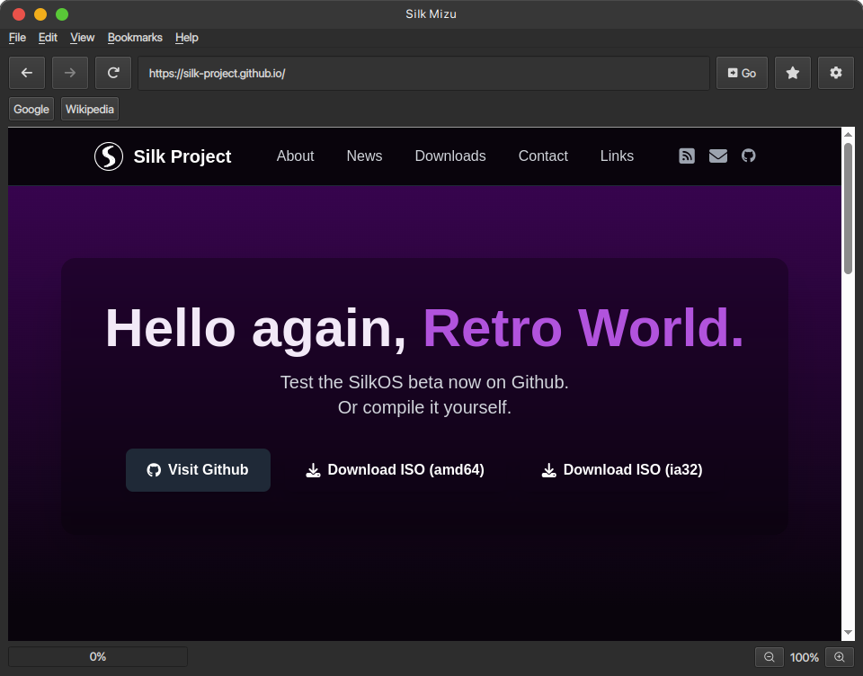
Version 0.2.4 · January 11
Implemented Silk-Start as the default start page and improved aesthetics using PyQtDarkTheme.
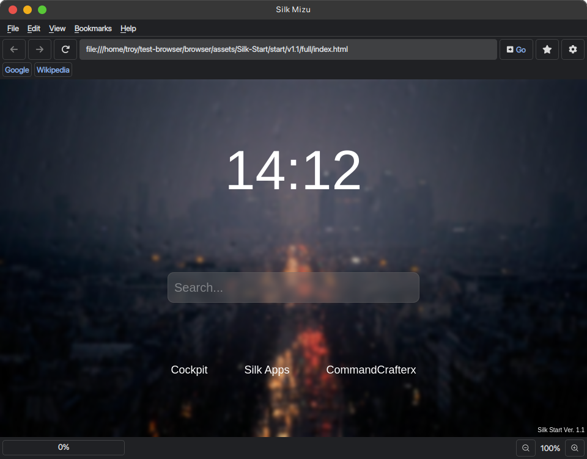
Version 0.2.5 · January 18
Finally added a fully working tab system.
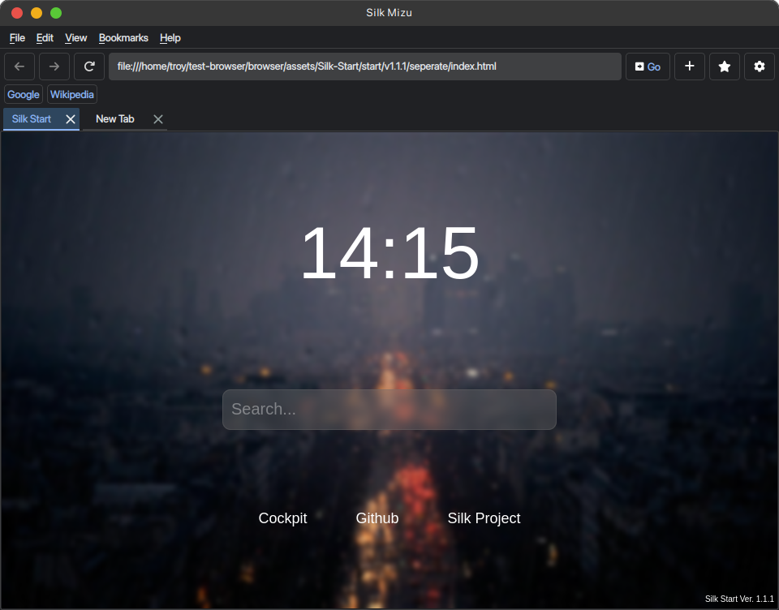
Version 0.2.9 · January 25
Implemented the AI Summary feature into the new sidebar.
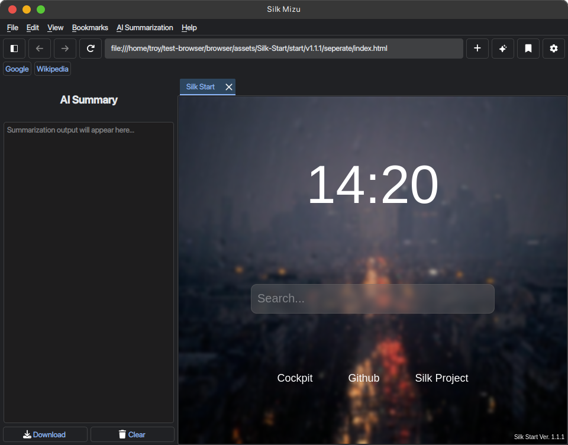

Version 0.2.93 · Febuary 15
Added the new translation system using Qt Linguist binaries.
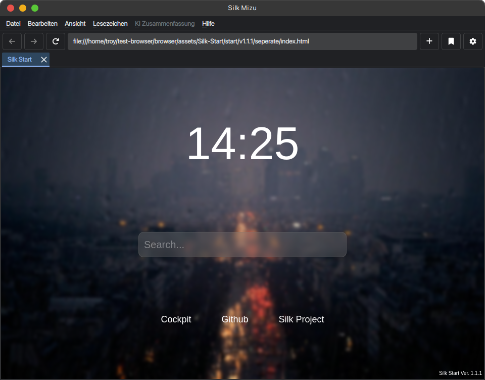
Version 0.3 Public Preview · March 16
First release to feature the extension dialog and the functionality to download and delete extensions for the browser.
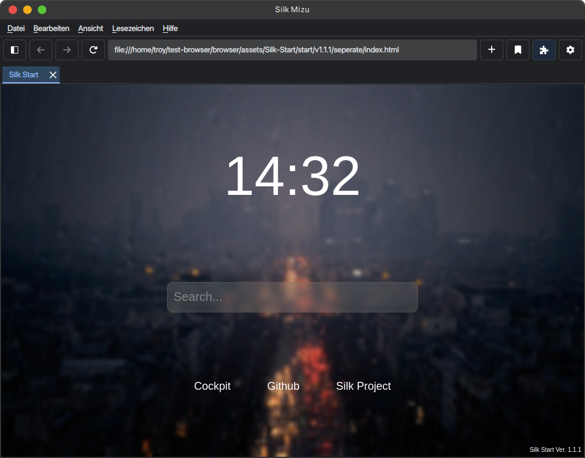
Version 0.3.11 Public Preview · March 31
First release of the Silk Mizu Browser featuring basic navigation functionality.
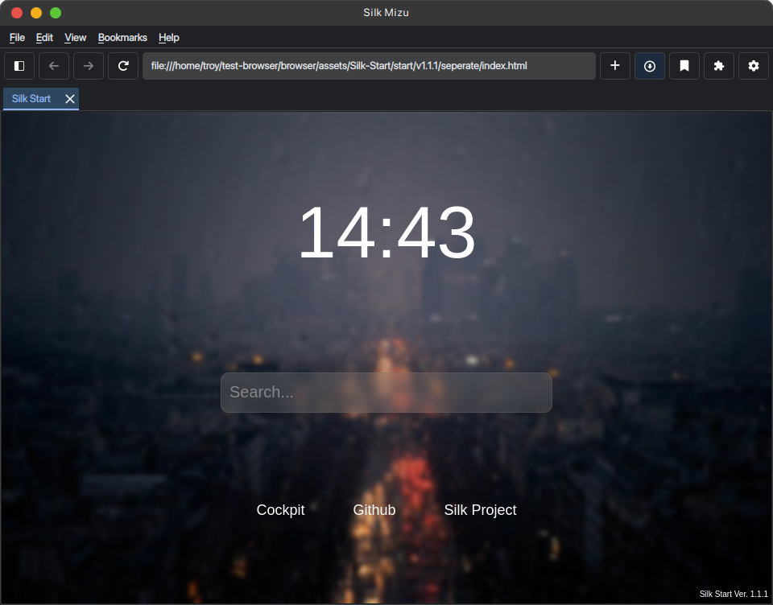
Version 0.3.11 · June 23
Fix download warnings, cut, copy, paste and opening links in new tabs. Switched from PyQt6 to PySide6.
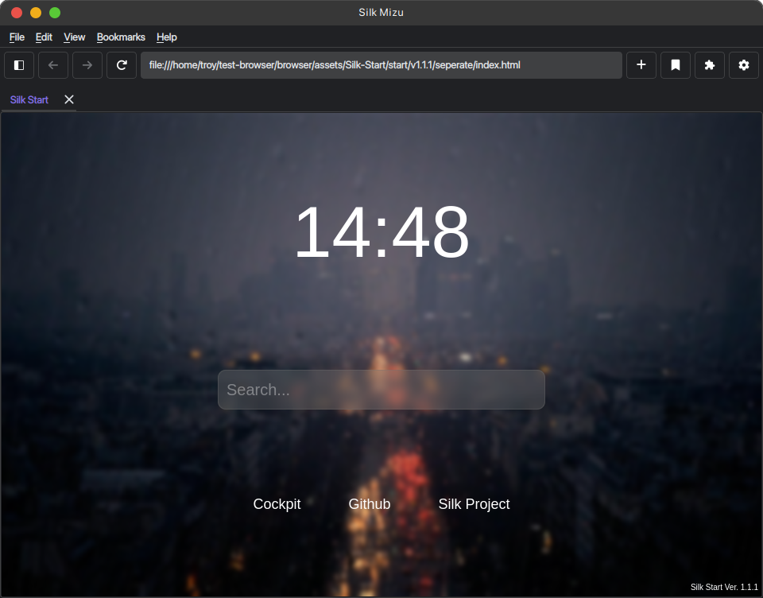
Version 0.4 Beta · July 9
Clean up whole browser structure by splitting the main script into folders and finally add the Navigation UI dialog.
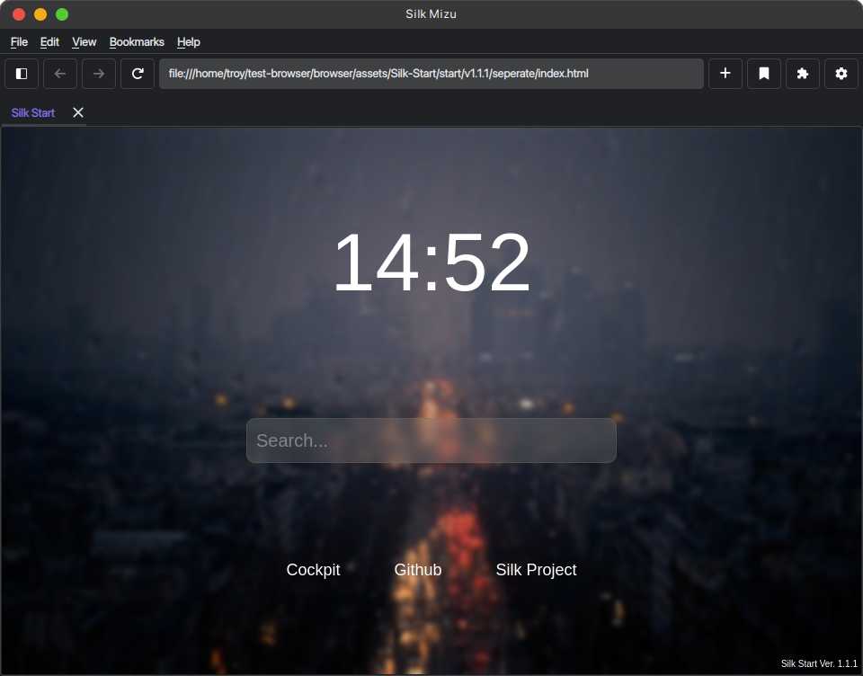